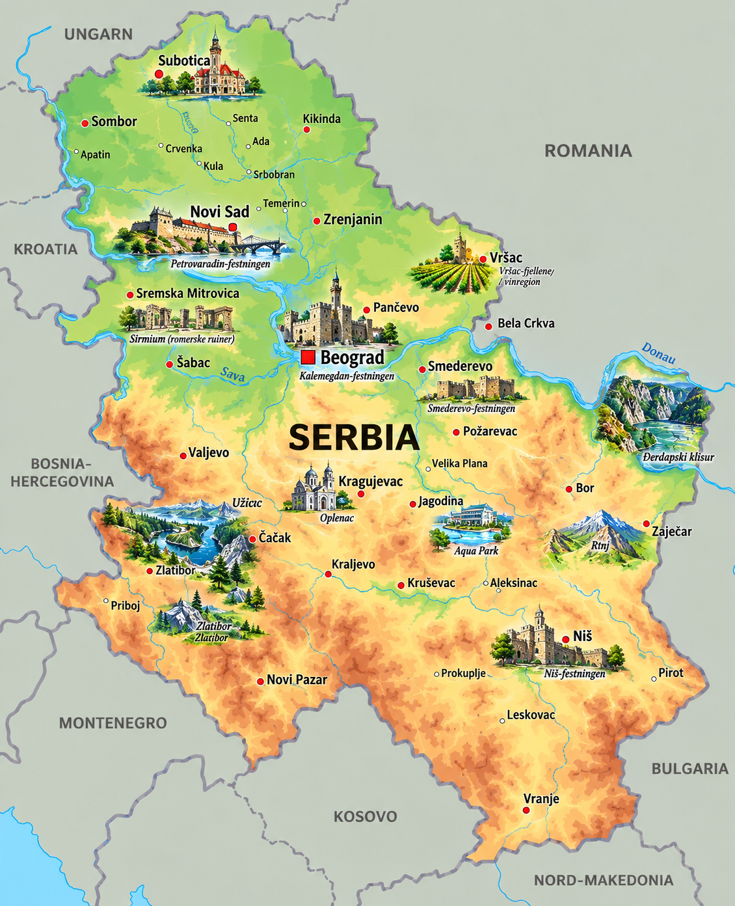
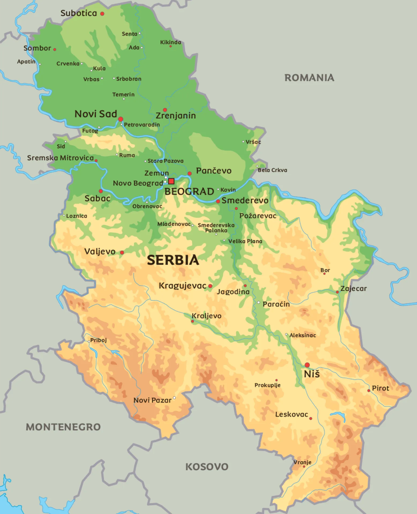

⚡ Korte fakta om Serbia
🗺️ Kart over Serbia
Klikk på et av kartene for å åpne og zoome i fullskjerm!


1. Natur og klima
Serbia ligger midt på Balkan i Sørøst-Europa. Landet har ingen kystlinje, men er fylt med mektige fjell, brede elver, dype kløfter og grønne sletter!
Midžor er det høyeste fjellet i Serbia og strekker seg 2 169 meter over havet!
Europas nest lengste elv, Donau, renner tvers gjennom Serbia og møter elva Sava midt i Beograd.
Serbia har innlandsklima med varme, solrike somre og kalde vintre med snø i fjellene.
Dyreliv: I Serbias store nasjonalparker som Tara og Đerdap kan du finne brunbjørn, ulv, gemse, gaupe og sjeldne rovfugler som gåsegribb!
2. Folk og samfunn
I Serbia bor det ca. 6,6 millioner mennesker. Serbere er kjente for å være veldig gjestfrie, varme og glad i god mat og sport!
🏢 Største byer i Serbia
- 🔹 Beograd: Hovedstaden med festningen Kalemegdan der to elver møtes!
- 🔹 Novi Sad: Den nest største byen, kjent for Petrovaradin-festningen.
- 🔹 Andre store byer: Niš (i sør) og Kragujevac (midt i landet).
✍️ Kyrillisk alfabet & Gjestfrihet
Serbia bruker to alfabeter! Både det kyrilliske (Србија) og det latinske alfabetet (Serbia) brukes i hverdagen.
Når du besøker en serbisk familie, blir du ofte budt på slatko (en søt fruktrett) og et glass kaldt vann som velkomst!
🗣️ Språk og kultur
Sproget i landet er serbisk, som tilhører den slaviske språkfamilien. Serbisk ligner mye på kroatisk og bosnisk.
3. Stat og politikk
Serbia er en parlamentarisk republikk og et demokrati, der presidenten er statsoverhode.

Laster...
Serbias president og statsoverhode.
Laster...
Statsministeren som leder regjeringen.
Narodna Skupština
Det serbiske parlamentet i Beograd med 250 representanter.
📍 Serbia er delt inn i 29 distrikter pluss hovedstaden Beograd, samt den autonome provinsen Vojvodina i nord.
4. Serbias historie
🏛️ Romerriket og keisere (200–300-tallet)
Hele 18 romerske keisere ble født i området som i dag er Serbia, inkludert Konstantin den store!
👑 Det mektige serbiske riket (1346)
Stefan Dušan ble kronet til keiser, og Serbia var på sitt største og mektigste i middelalderen.
Selvstendighet og det moderne flagget (1835/1878)
Etter flere hundre år under osmansk styre ble Serbia igjen et fritt kongerike på 1800-tallet.
🤝 Jugoslavia-epoken (1918–1992)
Serbia var hjertet i det store landet Jugoslavia, hvor Beograd var hovedstaden for flere balkanland samlet.
Republikken Serbia (2006)
Serbia ble en helt selvstendig moderne republikk etter at statsunionen med Serbia og Montenegro ble oppløst.
5. Økonomi og næringsliv
Hva lever de av i Serbia? Serbia produserer alt fra supergode frukter til avansert teknologi og biler!
Bringebær
Serbia er en av verdens største eksportører av bringebær!
IT & Teknologi
Teknologibransjen i Beograd og Novi Sad vokser i lyntempo.
Landbruk
Produserer masse hvete, mais, plommer og deilige oster.
Industri
Bilproduksjon og energi fra vannkraftverk langs Donau.
6. Kultur og underholdning
🏫 Skole og sport
Barn i Serbia starter på barneskolen (Osnovna škola) når de er 6,5–7 år og går der i 8 år.
🏀 Serbias mest populære sporter:
Basketball, tennis, fotball og vannpolo!
🌟 Kjente serbere
- ⚡ Nikola Tesla: Genial oppfinner som ga oss vekselstrøm og moderne elektrisitet!
- 🎾 Novak Đoković: En av verdens beste tennisspillere gjennom alle tider.
- 📻 Mihajlo Pupin: Fysiker og oppfinner som revolusjonerte telefonien.
- 📖 Ivo Andrić: Vant Nobelprisen i litteratur for boken «Broen over Drina».
🧠 Test deg selv: Serbia-Quiz!
Spørsmål laster...